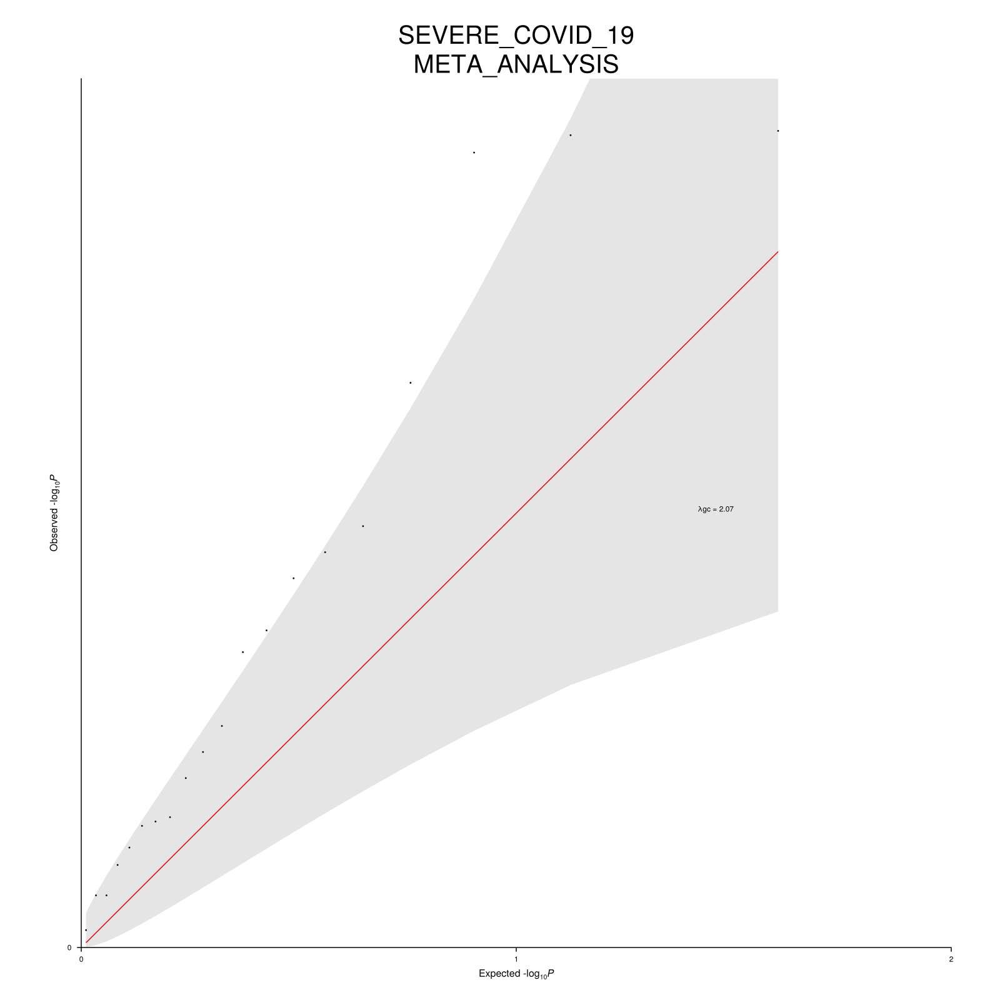

Running WDL-GWAS Locally
Expected Time: 30 minutes (mostly waiting for the run to finish)
In this example, we demonstrate how to run the workflow locally, we thus assume the installation step was successful and that CROMWELL_PATH points to the cromwell jar file.
Describing the workflow's inputs
Inputs to the workflow can be provided via a json file. In this example, we will replicate one of the test runs. Importantly, we will perform the analysis as follows:
- By group, defined by the SUPERPOPULATION column in the covariates file
- For two phenotypes: SEVERE_PNEUMONIA and SEVERE_COVID_19 in the covariates file.
- The gwas will use
AGE,SEXandAGExSEXas extra covariates. - The groups results will further be meta-analysed (default if
groupbyis set) but exclude the "AMR" group from the meta-analysis stage. - For this test dataset, fine-mapping thresholds have been lowered to yield some results
For illustration, a subset of the JSON file can be found here:
{
"gwas.meta_exclude": ["AMR"],
"gwas.covariates_file": "test/assets/covariates/covariates.csv",
"gwas.groupby": ["SUPERPOPULATION"],
"gwas.covariates": ["AGE", "SEX", "AGE_x_AGE"],
"gwas.phenotypes": ["SEVERE_PNEUMONIA", "SEVERE_COVID_19"],
"gwas.genotypes": {
"chr": "all",
"bed": "test/assets/genotypes/genotypes.arrays_wgs.aggregated.bed",
"bim": "test/assets/genotypes/genotypes.arrays_wgs.aggregated.bim",
"fam": "test/assets/genotypes/genotypes.arrays_wgs.aggregated.fam"
},
"gwas.imputed_genotypes": [
{
"chr": "1",
"pgen": "test/assets/imputed/chr1.qced.pgen",
"psam": "test/assets/imputed/chr1.qced.psam",
"pvar": "test/assets/imputed/chr1.qced.pvar"
},
{
"chr": "2",
"pgen": "test/assets/imputed/chr2.qced.pgen",
"psam": "test/assets/imputed/chr2.qced.psam",
"pvar": "test/assets/imputed/chr2.qced.pvar"
},
{
"chr": "3",
"pgen": "test/assets/imputed/chr3.qced.pgen",
"psam": "test/assets/imputed/chr3.qced.psam",
"pvar": "test/assets/imputed/chr3.qced.pvar"
}
],
}Note that each chromosome file needs to be filled independently, the full configuration file can be found in config/local-inputs-example.json.
Running the workflow
From the repository's root, simply run:
java \
-jar ${CROMWELL_PATH} run workflows/gwas.wdl \
--inputs config/local-inputs-example.json \
--options config/local-options-examples.jsonThe --inputs provides the workflow's input files and parameters while the --options flag provides other cromwell's options, here the workflow's output directory.
If you are running on macOS, the above will error because docker won't find a suitable image for your platform. You will need to change the cromwell's configuration, and you can for instance use the following config:
java \
-Dconfig.file=config/cromwell.local.conf \
-jar ${CROMWELL_PATH} run workflows/gwas.wdl \
--inputs config/local-inputs-example.json \
--options config/local-options-examples.jsonOutputs
The outputs will be found in the gwas_outputs directory. For example the poorly populated meta-analysis QQ plot for SEVERE_COVID_19, but well it is only a test dataset. For a full description of output files, please refer to the Workflow's Outputs section.
